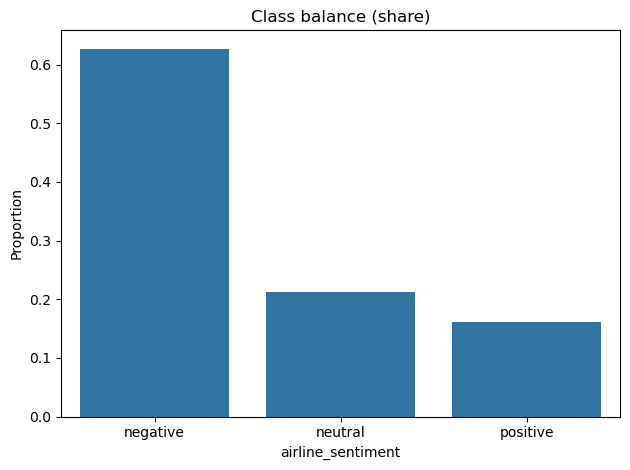
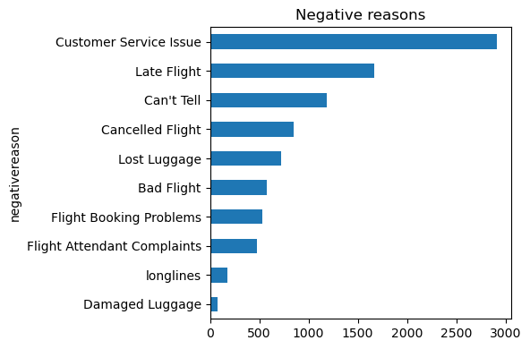
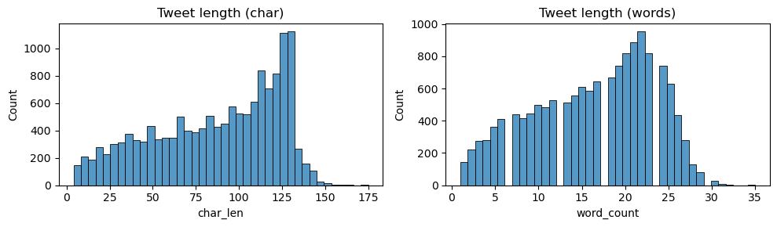
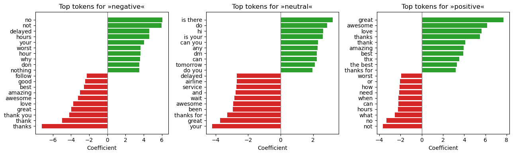
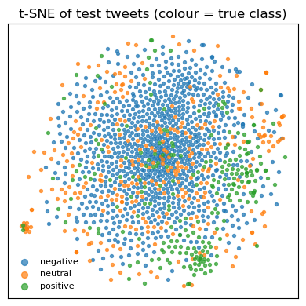
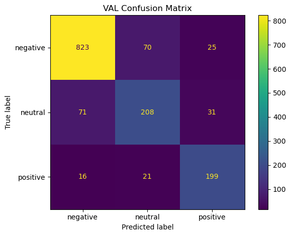
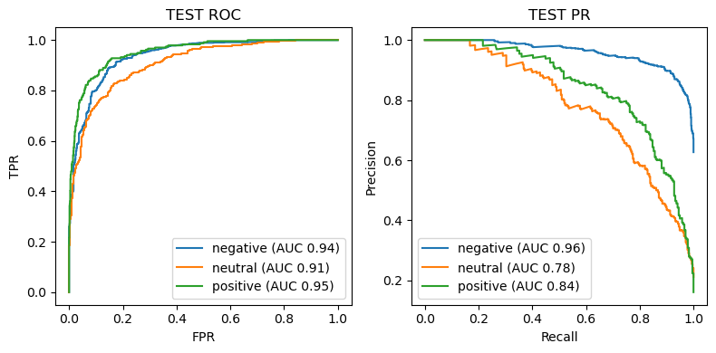

Final Report
This project predicts tweet sentiment (negative, neutral, positive) for U.S. airlines to speed up customer‑care triage. Two production‑ready models run end‑to‑end: a tuned TF‑IDF + Logistic Regression baseline and a fine‑tuned DistilBERT transformer. On a held‑out test set, DistilBERT reaches ~0.84 accuracy / ~0.79 macro‑F1; the tuned classical model delivers ~0.79 accuracy / ~0.74 macro‑F1. DistilBERT reduces the error rate by ~24% vs. the classical baseline.
  
Data
14,640 tweets (Feb 2015). Labels are imbalanced (≈63% negative, 21% neutral, 16% positive). Use stratified 80/10/10 splits and class weighting. Typical tweets fit within 128 tokens.
Approach
- Classical baseline — bigram TF‑IDF + Logistic Regression.
- Transformer — fine‑tuned DistilBERT with max length 128, 2 epochs, batch 16, LR 2e‑5.
 
Results (held‑out test)
- Majority baseline: ~0.63 accuracy.
- TF‑IDF + LogReg (tuned): ~0.79 accuracy, ~0.74 macro‑F1, macro ROC‑AUC ~0.91.
- DistilBERT (fine‑tuned): ~0.84 accuracy, ~0.79 macro‑F1.
Key patterns: - Main confusion flow: negative ↔︎ neutral. Positive remains distinct. - Confidence distribution: most errors sit in the 0.40–0.70 band; ≥0.80 predictions are reliable. - ROC/PR: clean separation for negative and positive; neutral is hardest.
  
Productization
- Inference: single‑file CLI and a FastAPI micro‑service (
/predict).
- Packaging: Dockerfile (Python 3.11‑slim) for one‑command run.
- CI/CD: GitHub Actions (lint → tests → image build; optional push on tags).
- Reproducibility: versioned artifacts for data, models, and metrics.
[Visual: CLI example + FastAPI /predict example] [Visual: Dockerfile snippet + CI workflow snippet]
Suggested operating policy
- Auto‑route when max class probability ≥ 0.80.
- Human‑review when 0.50–0.79.
- Monitor score distributions, confusion‑matrix drift, and calibration in production.
Next steps
- Apply temperature scaling for tighter probability calibration.
- Collect more neutral examples; test class‑weighted or focal loss.
- Explore a domain‑specific LM (e.g., TweetEval‑style) if neutral recall remains a pain point.